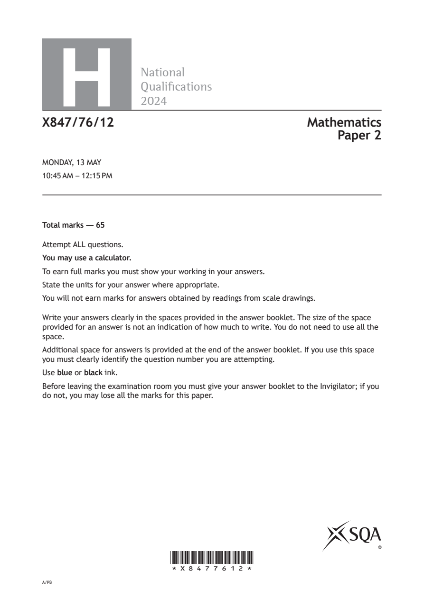
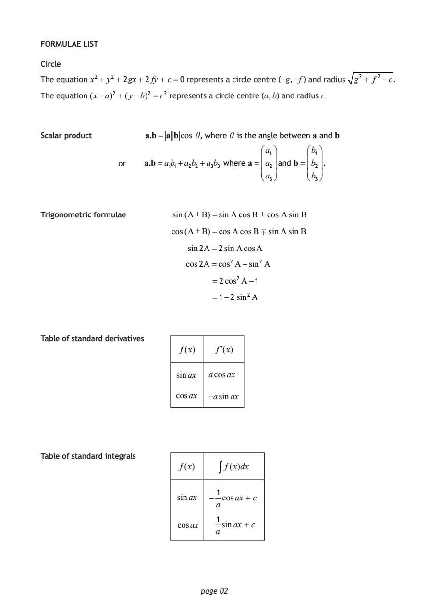
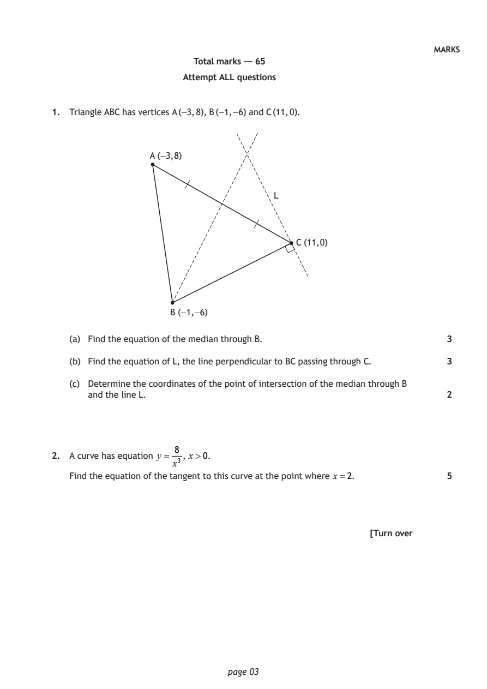
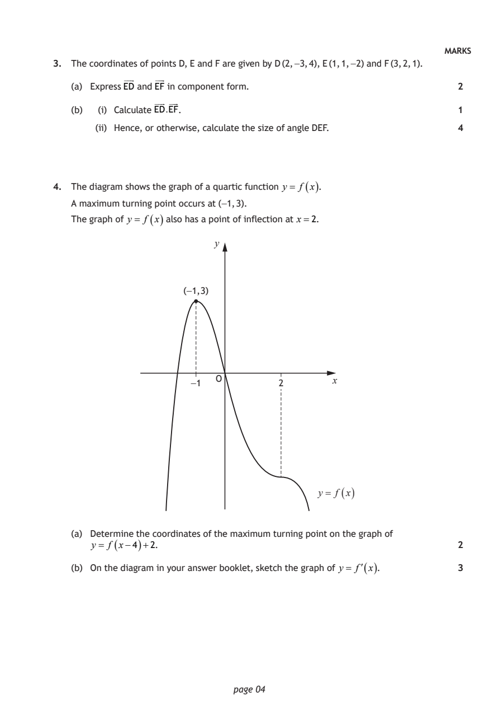
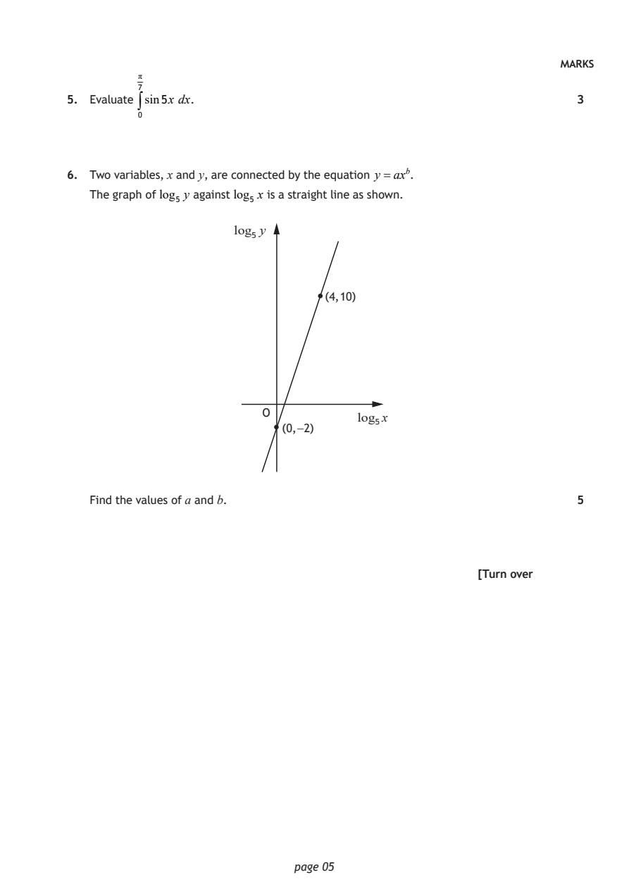
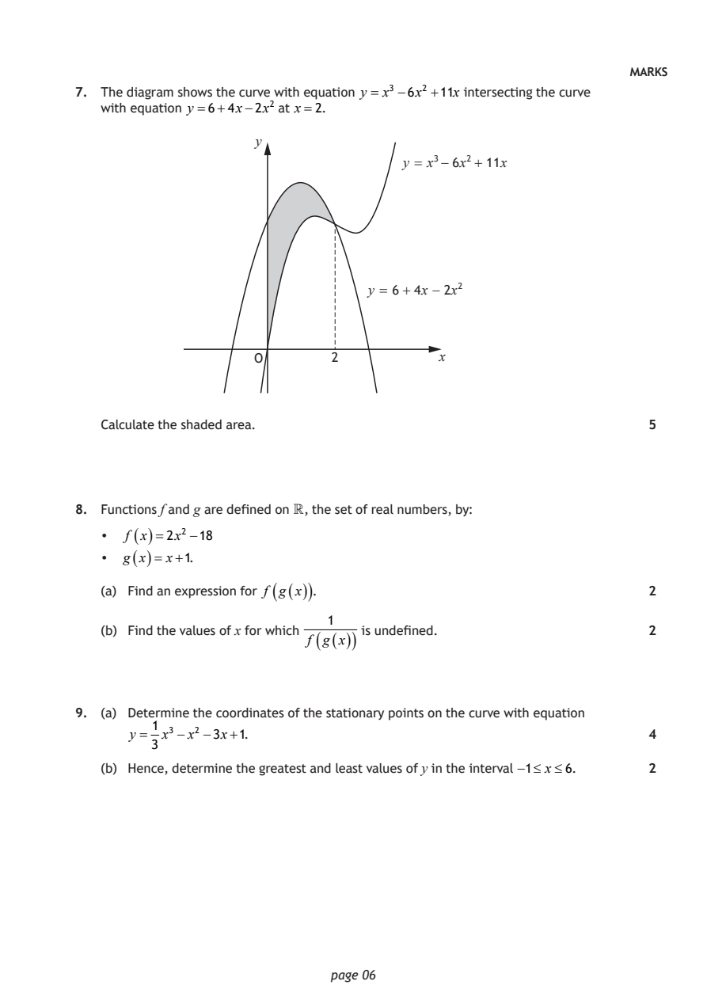
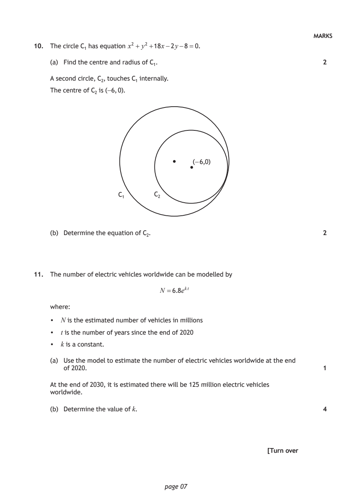
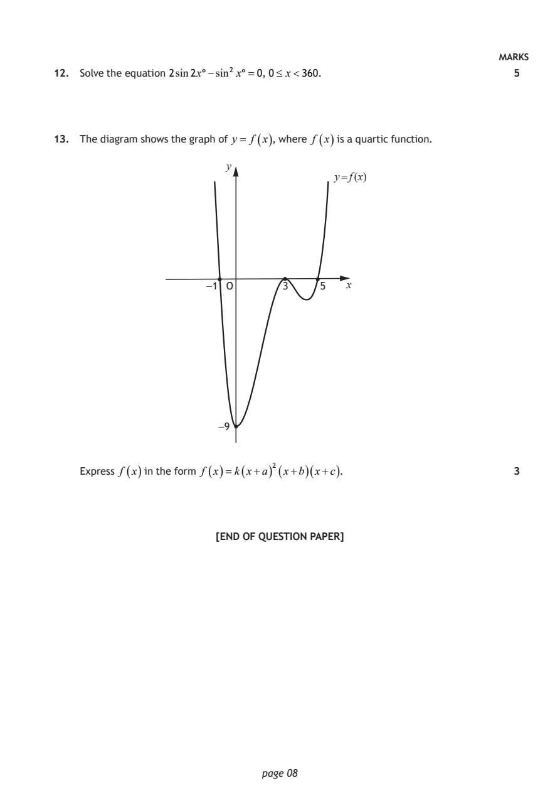

2024 Higher Mathematics - Paper 2 questions
Source: Scottish Qualifications Authority (SQA) / Qualifications Scotland. This is a StemInteract HTML companion, not an official HTML edition. Selectable text is supplied alongside original page images. Use the images or original PDF for equations, powers, fractions, vector notation, tables and diagrams; text extraction cannot fully preserve mathematical layout.
Jump to a question
PDF page 1

Selectable page text
H
National
Qualications
2024
X847/76/12 Mathematics
Paper 2
MONDAY, 13 MAY
10:45 AM – 12:15 PM
Total marks — 65
Attempt ALL questions.
You may use a calculator.
To earn full marks you must show your working in your answers.
State the units for your answer where appropriate.
You will not earn marks for answers obtained by readings from scale drawings.
Write your answers clearly in the spaces provided in the answer booklet. The size of the space
provided for an answer is not an indication of how much to write. You do not need to use all the
space.
Additional space for answers is provided at the end of the answer booklet. If you use this space
you must clearly identify the question number you are attempting.
Use blue or black ink.
Before leaving the examination room you must give your answer booklet to the Invigilator; if you
do not, you may lose all the marks for this paper.
©
*X8477612*
A/PBPDF page 2

Selectable page text
FORMULAE LIST
Circle
The equation x² + y²+ 2gx + 2fy + c=0 represents a circle centre (−g, −f ) and radius g² + f ² −c.
The equation (x−a)² + (y−b)² =r² represents a circle centre (a, b) and radius r.
Scalar product a.b= a b cos θ, where θ is the angle between a and b
a₁ b₁
or a.b=a₁b₁+a₂b₂ +a₃b₃ where a= a₂ and b= b₂ .
a₃ b₃
Trigonometric formulae sin(A±B)=sinA cosB ± cos AsinB
cos(A±B)=cosAcosB ∓ sinAsinB
sin2A =2sinAcosA
cos2A=cos²A−sin²A
=2cos²A−1
=1−2 sin²A
Table of standard derivatives
f(x) f′(x)
sinax acosax
cosax −asinax
Table of standard integrals
f(x) ∫ f(x)dx
1
sinax − cosax + c
a
1
cosax sinax + c
a
page 02PDF page 3
Paper 2, Question 1Paper 2, Question 2
Selectable page text
MARKS
Total marks — 65
Attempt ALL questions
1. Triangle ABC has vertices A (−3, 8), B (−1, −6) and C (11, 0).
A (−3, 8)
L
C (11, 0)
B (−1, −6)
(a) Find the equation of the median through B. 3
(b) Find the equation of L, the line perpendicular to BC passing through C. 3
(c) Determine the coordinates of the point of intersection of the median through B
and the line L. 2
8
2. A curve has equation y = , x>0.
x³
Find the equation of the tangent to this curve at the point where x=2. 5
[Turn over
page 03PDF page 4
Paper 2, Question 3Paper 2, Question 4
Selectable page text
MARKS
3. The coordinates of points D, E and F are given by D (2, −3, 4), E (1, 1, −2) and F (3, 2, 1).
(a) Express ED and EF in component form. 2
(b) (i) Calculate ED.EF. 1
(ii) Hence, or otherwise, calculate the size of angle DEF. 4
4. The diagram shows the graph of a quartic function y = f ( x ).
A maximum turning point occurs at (−1, 3).
The graph of y = f ( x ) also has a point of inflection at x=2.
y
(−1, 3)
−1 O 2 x
y = f ( x )
(a) Determine the coordinates of the maximum turning point on the graph of
y = f ( x−4 )+2. 2
(b) On the diagram in your answer booklet, sketch the graph of y = f( x ). 3
page 04PDF page 5
Paper 2, Question 5Paper 2, Question 6
Selectable page text
MARKS
π
7
5. Evaluate ∫sin5x dx. 3
0
6. Two variables, x and y, are connected by the equation y =ax^{b}.
The graph of log₅ y against log₅ x is a straight line as shown.
log₅ y
(4, 10)
O
log₅x
(0, −2)
Find the values of a and b. 5
[Turn over
page 05PDF page 6
Paper 2, Question 7Paper 2, Question 8Paper 2, Question 9
Selectable page text
MARKS
7. The diagram shows the curve with equation y = x³ −6x² +11x intersecting the curve
with equation y =6+4x−2x² at x=2.
y
y = x³ − 6x² + 11x
y = 6 + 4x − 2x²
O 2 x
Calculate the shaded area. 5
8. Functions f and g are defined on , the set of real numbers, by:
• f ( x )=2x² −18
• g ( x )= x+1.
(a) Find an expression for f ( g ( x )) . 2
1
(b) Find the values of x for which is undefined. 2
( ( ))
f g x
9. (a) Determine the coordinates of the stationary points on the curve with equation
1
y = x³ −x² −3x+1. 4
3
(b) Hence, determine the greatest and least values of y in the interval −1≤ x≤6. 2
page 06PDF page 7
Paper 2, Question 10Paper 2, Question 11
Selectable page text
MARKS
10. The circle C₁ has equation x² + y² +18x−2y−8=0.
(a) Find the centre and radius of C₁. 2
A second circle, C₂, touches C₁ internally.
The centre of C₂ is (−6, 0).
(−6,0)
C₁ C₂
(b) Determine the equation of C₂. 2
11. The number of electric vehicles worldwide can be modelled by
N =6.8e^{k}^{t}
where:
• N is the estimated number of vehicles in millions
• t is the number of years since the end of 2020
• k is a constant.
(a) Use the model to estimate the number of electric vehicles worldwide at the end
of 2020. 1
At the end of 2030, it is estimated there will be 125 million electric vehicles
worldwide.
(b) Determine the value of k. 4
[Turn over
page 07PDF page 8
Paper 2, Question 12Paper 2, Question 13
Selectable page text
MARKS
12. Solve the equation 2sin2x°−sin² x°=0, 0≤ x<360. 5
13. The diagram shows the graph of y = f ( x ), where f ( x ) is a quartic function.
y
y = f (x)
−1 O 3 5 x
−9
Express f ( x ) in the form f ( x )=k ( x+a ) ² ( x+b )( x+c ) . 3
[END OF QUESTION PAPER]
page 08